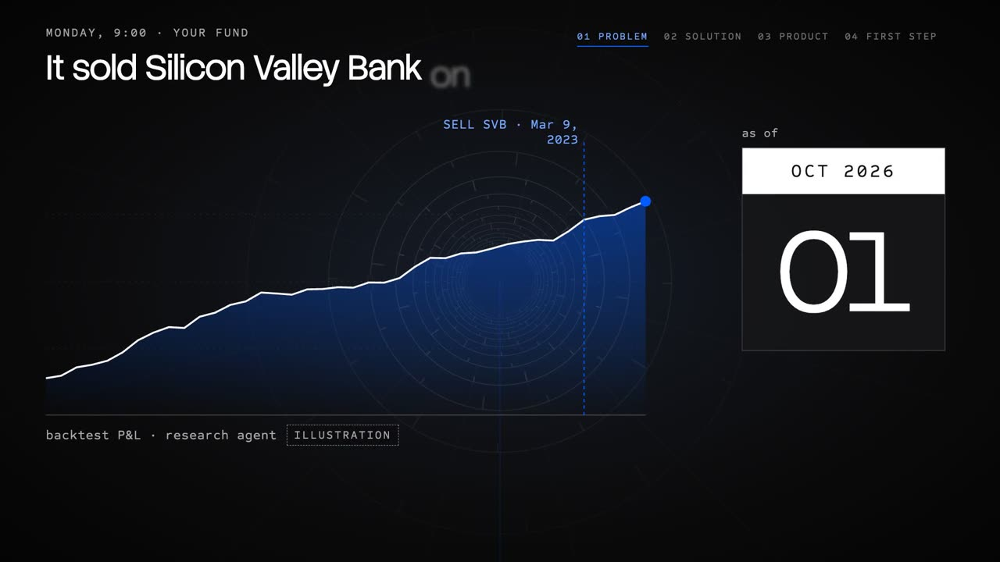
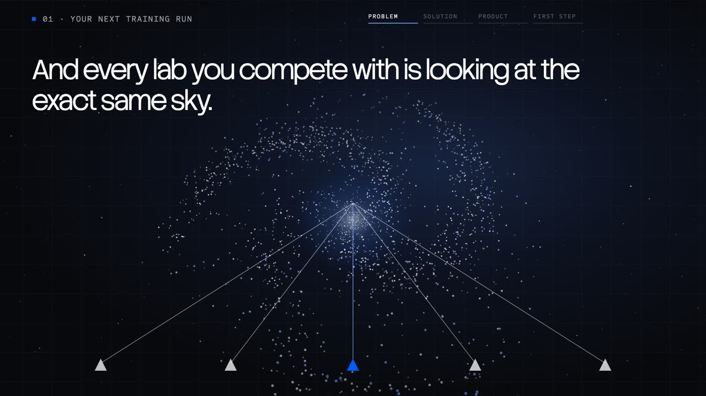

George Trushevskiy · Founding GTM take-home · Keenable
Search, with a clock.
I ran your product, tested it, and brought back the bug.
Two films, a live demo, graded sources.
Film 1 · Fintech: search, with a clock · 6:11 · intro, problem, solution, product, first step

The brief, answered. Nine asks, each with proof.
| Requirement | Our answer | Proof | Slide |
|---|
All 20 lines of the brief, each with its proof: Contents (press T). Source: toc/brief-map.json
Option 2 · 01 · the brief“Pick one vertical and build the sales thesis: what these companies do with web search today, what it costs them, why Keenable is better.”
Backtests read the future. query_time fences them.
Today · MEASURED
33/60unfenced results
state the outcome (six events)
What it costs · list
$14–35per 1K grounded calls
Bing API retired 11 Aug 2025
Why Keenable · MEASURED
0/60acquired after cutoff
at $4 → $1 per 1K list
Evidence →The SVB story →Full thesis →
Sources: fintech_judged.json · Microsoft (A) · Google (A) · PPC Land (B/C) · keenable.ai/pricing (A) · all sources →
Head-to-head · 7 events · MEASURED 1 Oct 2026
Keenable leaked least of eight. Today’s questions: it trails.
| Provider · date filter | States the outcome · fixed rule | LLM flags | Useful pre-event | Verified today | $ / 1K list |
|---|---|---|---|---|---|
 query_time, crawl date query_time, crawl date | 1/70 | 5 (1 real) | 30/70 | 23/39 | $4 ($1) |
| Linkup published date | 10/69 | 15 (14 real) | 25/69 | 25/39 | $6 |
| Google, date range | 14/70 | 31 | 23/70 | 38/39 | $1 ($0.30) |
| Google, date range | 15/67 | 33 | 20/67 | 7/9 first 10 | $4 |
| published or updated date | 16/69 | 35 | 17/69 | 37/39 | $8 |
| published date | 31/70 | 57 | 9/70 | 39/39 | $17 |
| Parallel no before-date filter | 32/70 | 61 | 2/70 | 35/39 | $1 |
| Firecrawl custom date range | 37/70 | 63 | 1/70 | 34/36 | $6.4 |
One outcome rule, fixed before any run. LLM flags reviewed for Keenable and Linkup only. Small n. Source: latest_judged.json
PROOFRun it in their harness
Switch the fence and the results flip.
Useful pre-event results per top 10: 0.4 no fence · 0.6 publish date · 4.3 query_time (MEASURED)
Recorded 2026-10-01, 7 events; 28/30 agree with a blind second-model check, no human validation yet. Source: data/fence_relevance.json
Option 2 · 02 · the brief“5 targets in that vertical, the exact people from your network you’d approach first, and why.”
Five own a backtest or a screen. Second-degree.
- BalyasnyKate Lewis · Head of Equities Data Science & AIbacktests are the workload
- HebbiaCharlie Pickell · Global Head of AIdated citations · 2nd (confirm)
- RogoGabriel Stengel · CEO and Founder150,000+ queries a day
- SardineAlex Kushnir · Head of Commercial Developmentadverse media · 2nd (confirm)
- Bretton AIWill Lawrence · Co-founder and CEObuys by benchmark
Second-degree unless marked; no intros yet. Source: public_people.json · rogo.com
Finding #1 · severity A · MEASURED 1 Oct 2026
The fence held. One page served later text.
Later text, fenced
1/60blockworks.co, FTX
cutoff 8 Nov 2022, 0/60 acquired after it
acquired_at
202228 Jun 2022
before the cutoff, so it passed
published_at · snippet
20246 Mar 2024
“FTX, BlockFi score tentative settlement agreement”
FixServe the version from query_time, or drop it.
Sources: fintech_run.json (FTX row) · product feedback #1
My recommendation · lead with fintechFintech is measured today. Galactica sells the same field.
One timestamp, two products.
Option 2 first · the search
0/60acquired after the cutoff
none after the decision date; one bug to fix
Option 1 next · the model
1,209/1,209sampled docs carry acquired_at
a lab can cut a dated corpus
Prior art: arXiv 2603.11838 (A) · 2502.21206 (A). Sources: fintech_judged.json · galactica_estimates.md
Film 2 · Galactica: the same timestamp, for labs · 5:19 · problem, solution, product, first step

Option 1 · 04 · the brief“Sales thesis: how labs collect pretraining data today, what it costs them, why Keenable can be better.”
Labs share one crawl. Keenable reaches past it.
Today · Common Crawl
≥64%of 47 LLMs studied
trained on it; Sep 2026 crawl only 27% new
What it costs · MODEL
$6.7Mper year to build
20B docs/month, mid case; card $1–2M
Why Keenable · MEASURED
75.4%CI 71.4–79.0
of 500 sampled pages, URL match, in no 2026 crawl
Evidence →The lab story →Full thesis →
Sources: Mozilla (A) · Common Crawl (A) · model opt1_build_vs_buy.json · my run cc_overlap.json · all sources →
O · The dataset card · MEASURED · 95% CI
I estimated the ten unknowns from 1,209 docs.
- One-off domains63.9%60.9–66.8 · n 1,009
- Non-English answers65.6%58.6–72.0 · n 189
- Closed by robots.txt6.8%1.1–14.2 · n 504
- AI-generated, floor≥3.7%2.7–5.0 · n 1,009
- Thin pages4.1%3.0–5.5 · n 1,009
- Explicit adult pages0≤ 0.25% · n 1,209
- Docs holding PII8.7%7.1–10.6 · n 1,009
- AI opt-out15.7%10.9–21.3 · n 504
- News pages18.3%15.4–21.6 · n 600
- EU/EEA domains5.3%4.1–6.9 · n 1,009
Search-results sample, not random. Source: ga_est_ten.json, galactica_estimates.md
Option 1 · 05 · the brief“5 companies and the exact people from your own network you’d approach first, and why.”
Five data owners. NVIDIA + HF is one.
- NVIDIA + Hugging FaceLeandro von Werra (HF) · Markus Kliegl (NVIDIA)FineWeb 15T + Nemotron-CC 6.3T
- DatologyAIAri Morcos · CEOcurates tokens for labs
- Arcee AILucas Atkins · CTO~20T tokens for Trinity · 2nd (confirm)
- Microsoft AIXiao Guo · VP of Engineeringown data team · 2nd (confirm)
- AI21 Labs · expansionIsgav Davidowitz · Director of Dataon Keenable’s “In production” strip: a second product; ask Andrey
Second-degree unless marked; Kliegl cold; no intros yet. NVIDIA–HF deal pending (2 Sep 2026). Source: first5_canonical.md
Interlude
40 seconds, for fun.
The ad plays here in the live version.
How a pilot runs
Five steps. The bar is set first.
The Extended version shows where I already ran each step on Keenable.
PROPOSAL · targets, not results
Three evals by day 30. Paid pilot by 90.
- Day 303evals on buyers’ own queriesWeekly misses memo to product.
- Day 602verdict memos delivered1 deal sized; platform spec signed.
- Day 901paying pilot3 pilots running; playbook handed over.
Targets, not promises: the weekly scorecard
Why me · San Francisco
I ran it, found a bug, mapped buyers.
A real product bug · MEASURED
1/60fenced results, later text
2022 page, 2024 text · fix proposed
A drop-in kit · MEASURED
26/26tests pass
OpenAI, Anthropic, MCP: one command
The buyers, mapped · MEASURED
864second-degree people
at 119 target accounts
My askSend me one team’s 50 queries. Verdict memo in 48 hours.
Sources: fintech_judged.json · TEST-RECEIPT.md · public_people.json
The one next step
Send me 50 queries. Verdict in 48 hours.
Or a lab’s cutoff and sample: an overlap report in 48 hours.
george.trusynth.comSources
Sources, graded.
A: the paper, the law or the company’s own page. B: reputable press. My runs link to their data file.